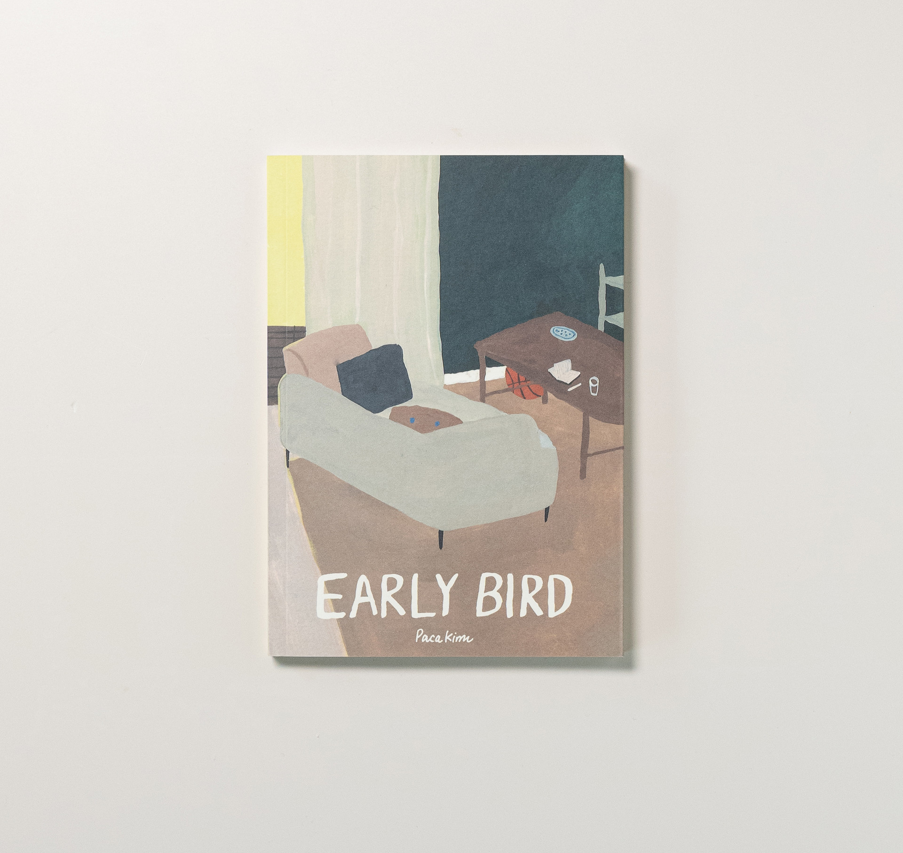
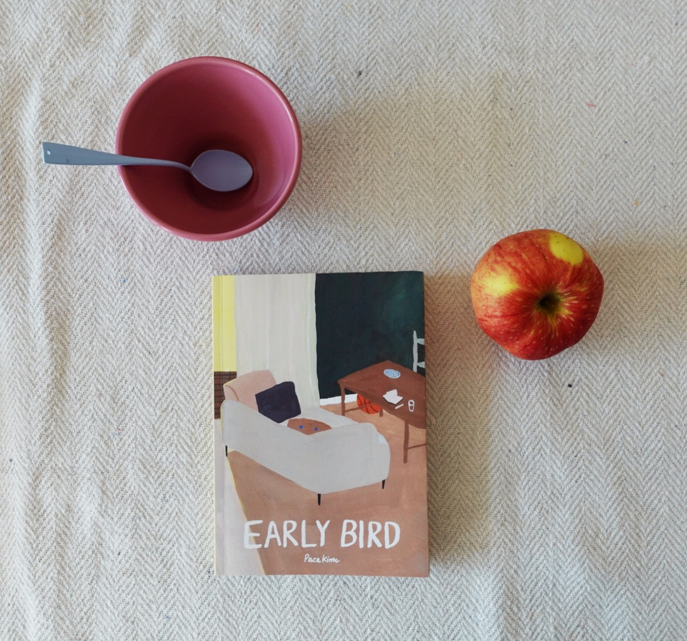
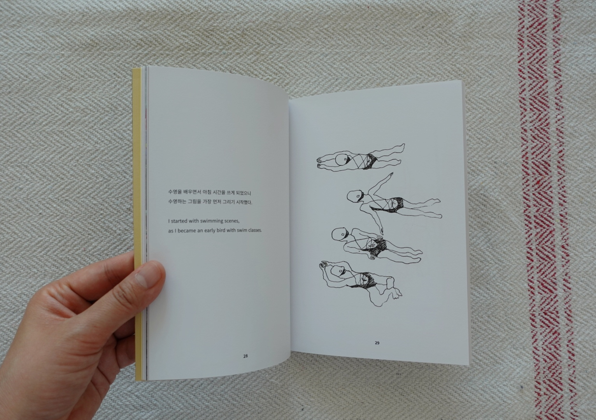
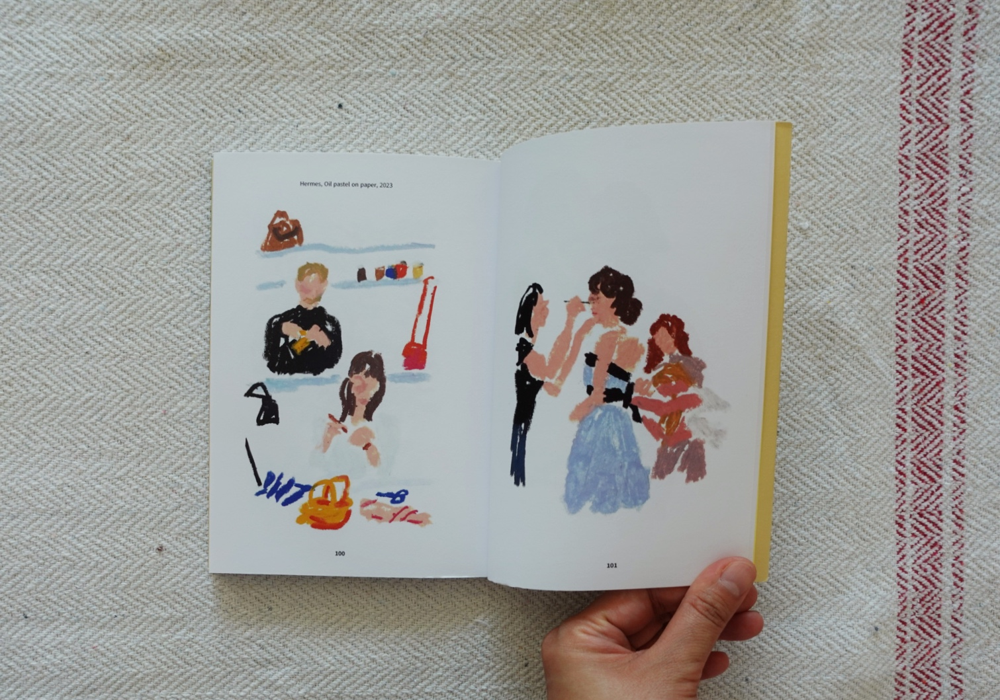
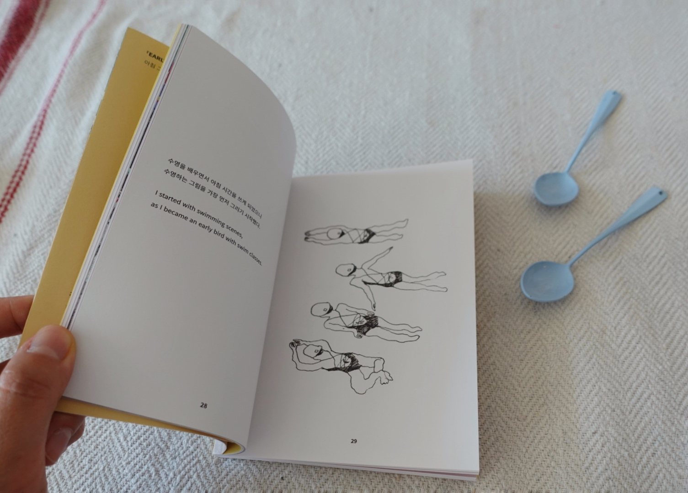
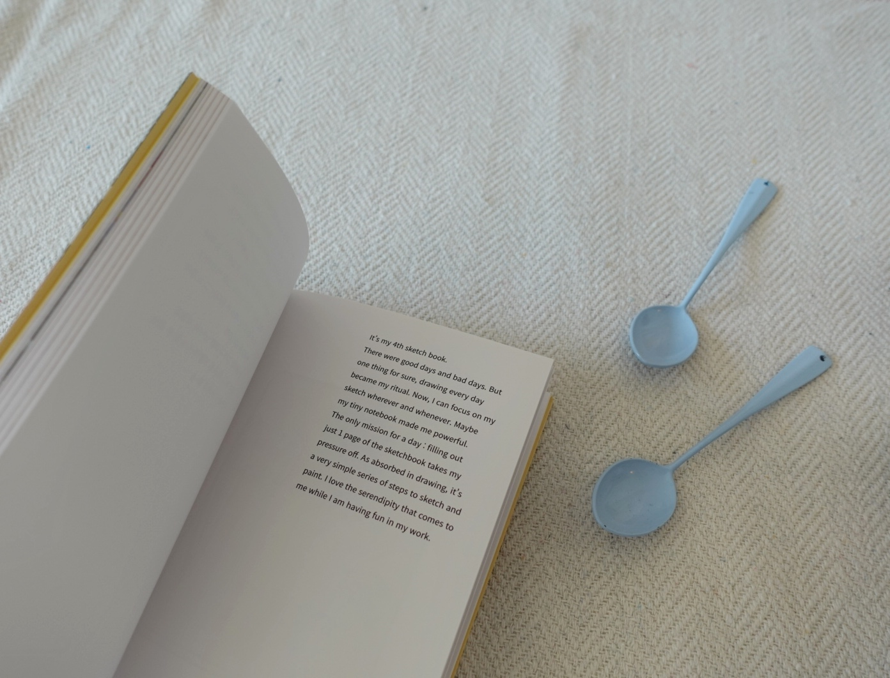
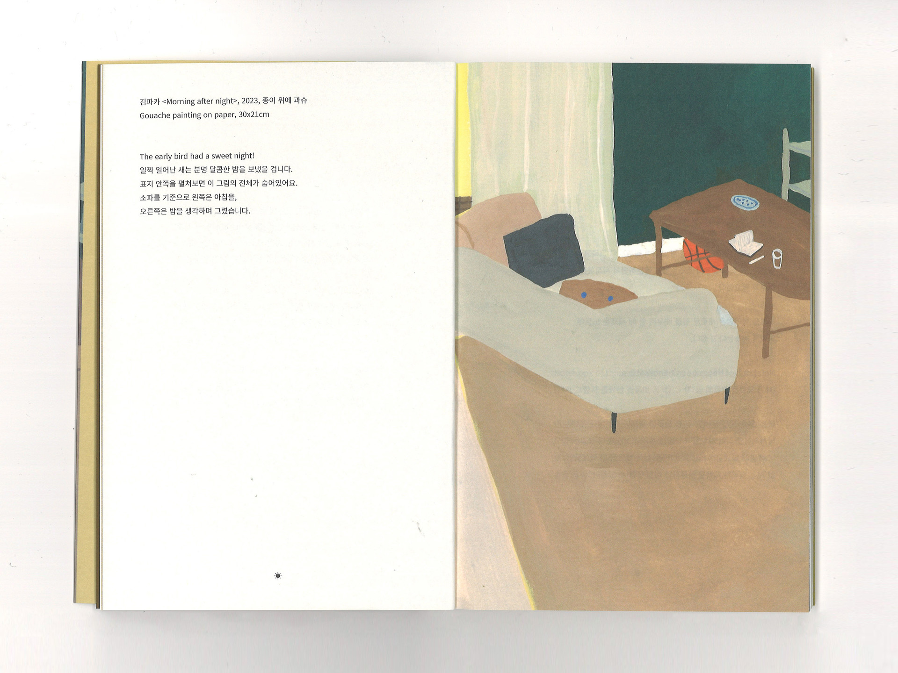
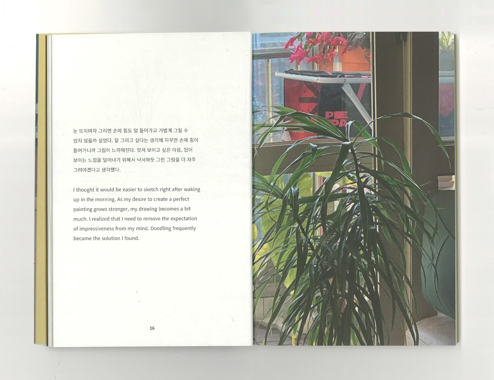
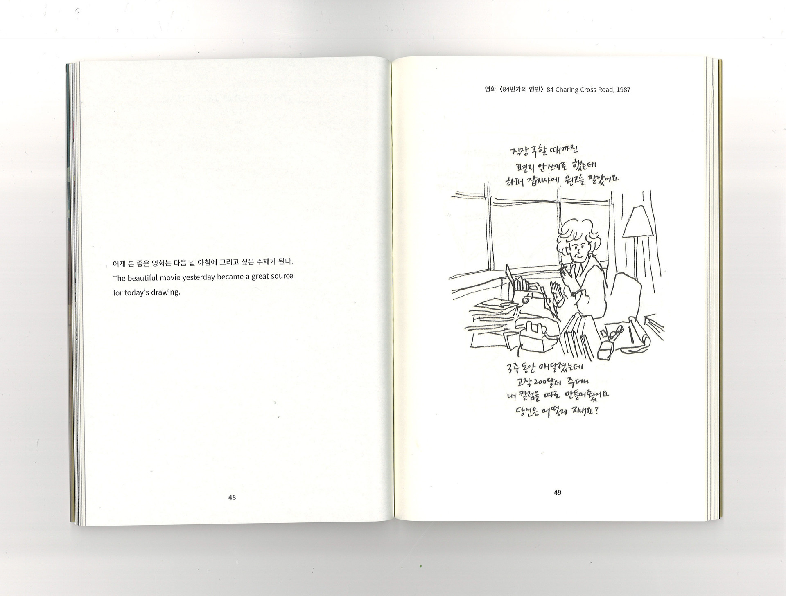
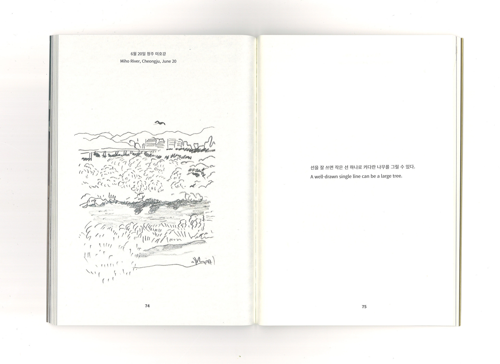
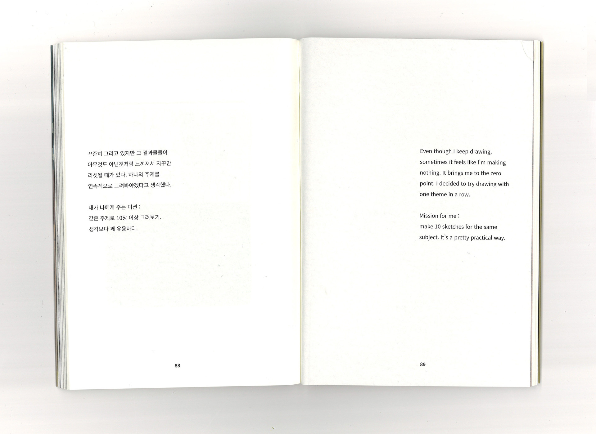
매일 아침 그림그리기로 하루를 시작한 7개월간의 아침드로잉을 모은 그림모음집입니다. 2023.1 — 7
저는 사실 아침잠이 많습니다. 아침에 그림을 그려볼 생각을 한 건 변화가 필요한 시기라고 생각해서였던 것 같아요. 손에 힘이 덜 들어간 채 눈 뜨자마자 그리고 싶은 건 뭘까? 궁금한 마음으로 시작했습니다. 이 책에는 52장의 드로잉이 실려있습니다. 7개월간의 기록 중 쓸만한 것을 한 달치로 계산하면 7.4라는 숫자가 나옵니다. 30장을 그리면 그 중에 7장은 봐 줄 만하다고 생각해보면 되겠습니다. 이렇게 모은 드로잉은 다음에 뭘 하고 싶은지 얻는 힌트가 되어줄 거라고 생각하고 있어요.
초판 500부 한정으로 제작하였습니다.
A collection of morning drawings from seven months of starting each day with a sketch — January through July 2023.
I'm actually someone who loves to sleep in. The idea of drawing in the mornings came from a feeling that I needed a change. I was curious: what would I want to draw the moment I opened my eyes, with my hand still loose and unhurried? That curiosity is what got me started. This book contains 52 drawings. Out of seven months of work, if you calculate the "usable" ones as one month's worth, you get the number 7.4 — meaning for every 30 drawings, about 7 feel worth keeping. I believe these collected drawings will become hints toward what I want to make next.
First edition, limited to 500 copies.